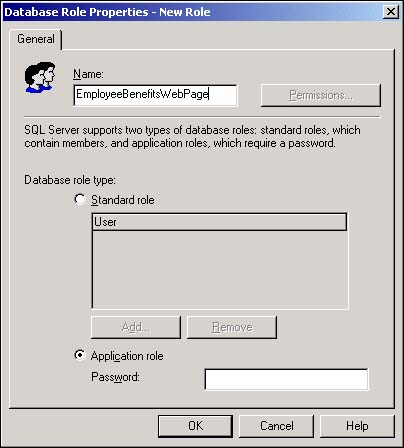

As if fixed database roles and custom database roles weren't enough, SQL Server provides a third category of database role. Sometimes you want users to simply start up an application and have access to SQL Server's data through the application. In these cases, you don't want to have to set up logins, user accounts, and other security configurations to accommodate the application's users. This is the job of application roles.
I have users who routinely access SQL Server through an application that I've written in Visual Basic. I also have users who use Web pages to access the data using ASP techniques. I'd like a simple and easy way to provide these users with limited access to the database, but I don't want to spend a lot of time configuring SQL Server.
Create a SQL Server 2000 application role for these users. The application logs into SQL Server and provides the password that is required to access data. Typically, application roles are severely limited in their ability to access data.
SQL Server provides for the creation of application roles. An application role is established to allow programs that are written in Visual Basic and other programming languages to freely access and update SQL Server data.
People cannot use application roles. You cannot add users, groups, or other roles to an application role. The application role is not enabled until a password is provided.
At runtime, the user's application will provide the role's name and password to gain access to the data that is granted by the application role. The application is unable to do anything other than the permissions you established for the application role.
Open Enterprise Manager and expand the Northwind database's icon.
Right-click the Northwind database's Roles icon and select New Database Role from the shortcut menu. The New Role dialog box opens in response (see Figure 11.24). Select the Application Role option button near the bottom of this dialog box.

Provide a name and a password for the application role.
Click the OK button to save the application role.
Right-click the new application role, and select Properties from the shortcut menu.
Set the object permissions as you did in steps 6, 7, and 8 in section 11.12 in this chapter.
An application role bypasses the normal permissions that are applied to a database. A user who is not otherwise able to access data will be able to use a program such as Excel, Word, or Visual Basic to get at the data as long as an application role has been established for the program. The permissions that are established for the application role exist only while the application maintains a connection to the database.
While the application role is active, all other permissions that are granted to the user on the database are suspended, and only the permissions that the application role provides are enabled.
A user can't exploit an application role to access other databases that SQL Server manages. The only permissions that an application role has on other databases are the permissions granted to the default guest user. Under most circumstances, the system administrator will have disabled or severely limited the SQL Server guest account.